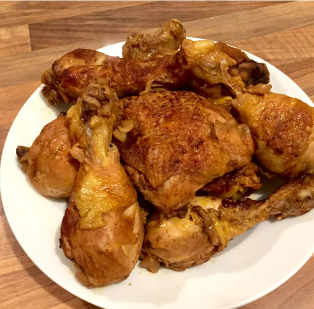

Adobo

Description
Adobo is a popular Filipino dish that involves meat, seafood, or vegetables marinated in vinegar, soy sauce, garlic, and other seasonings. The marinated ingredients are then simmered in the marinade until tender and flavorful. Adobo is a versatile dish that can be made with a variety of proteins, including chicken, pork, beef, and fish. It is often served with rice and is a staple in Filipino cuisine.
This classic Filipino adobo recipe is simple to make and full of flavor. The combination of vinegar, soy sauce, and garlic creates a tangy and savory sauce that is perfect for marinating and cooking meat.
Ingredients
- 2 lbs chicken thighs, bone-in and skin-on
- 1/2 cup soy sauce
- 1/2 cup white vinegar
- 1 cup water
- 1 onion, sliced
- 4 cloves garlic, minced
- 1 bay leaf
- 1/2 tsp black peppercorns
- 1 tbsp vegetable oil
Instructions
- In a large bowl, combine the soy sauce, vinegar, water, onion, garlic, bay leaf, and peppercorns. Add the chicken thighs to the marinade and refrigerate for at least 1 hour, or overnight for best results.
- Heat the vegetable oil in a large skillet over medium-high heat. Remove the chicken from the marinade and sear on both sides until browned, about 5 minutes per side.
- Pour the marinade over the chicken and bring to a boil. Reduce the heat to low, cover, and simmer for 30-40 minutes, or until the chicken is cooked through and tender.
- Remove the chicken from the skillet and transfer to a serving platter. Increase the heat to medium-high and cook the sauce until it thickens, about 5-10 minutes.
- Pour the sauce over the chicken and serve with steamed rice.